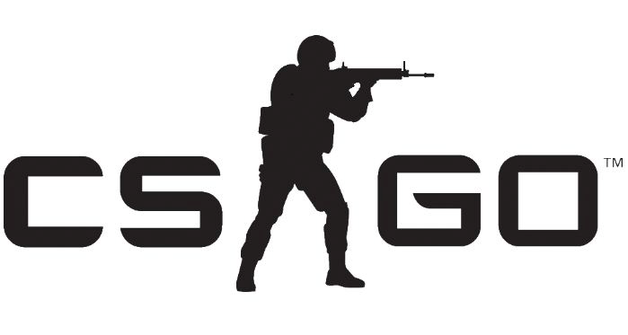
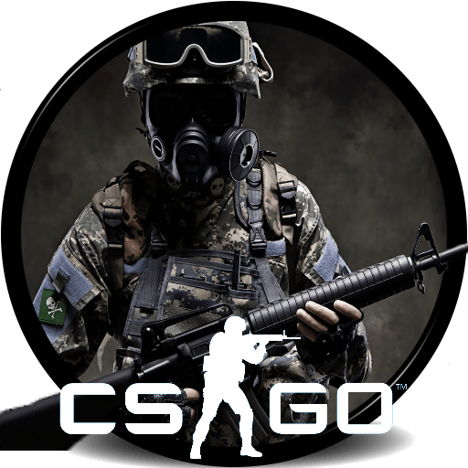

|  |  |
O Flashpoint está atualmente à procura de um substituto para a lista dinamarquesa que jogou com o FunPlus Phoenix na Fase 1, confirmou o HLTV.org .
Na quarta-feira, Casper "cadiaN" Møller revelou no Twitter que estava voltando para a Dinamarca, confirmando que as negociações entre Heroic e FunPlus Phoenix foram interrompidas como resultado de Patrick "es3tag" Hansen concordar em se juntar à Astralis em 1º de julho .
Isso deixa o Flashpoint um time à frente da Fase 2, que está programada para começar na sexta-feira às 14:00 . Assim como na etapa de abertura, as 12 equipes concorrentes serão divididas em três grupos de eliminação dupla, com todas as partidas sendo disputadas no formato de melhor de três.
O FunPlus Phoenix conquistou apenas 15 pontos na Fase 1 depois de terminar o último do grupo e enfrenta uma tarefa difícil de garantir pontos suficientes na Fase 2 para vencer os playoffs de oito equipes. As tropas do cadiaN perderam a partida de abertura contra o Cloud9 e tiveram que perder a série de suporte inferior contra o Orgless , um golpe que deixou o jovem de 24 anos "estripado" .